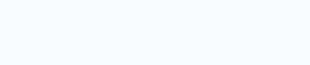
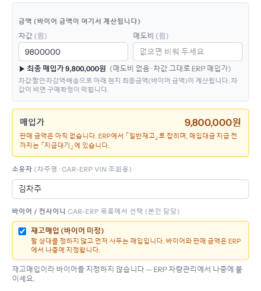
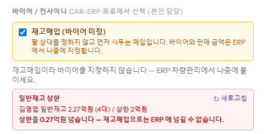
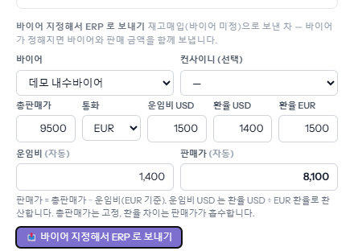
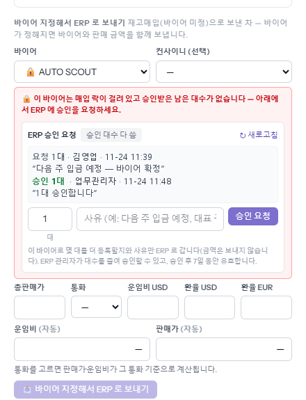

3단계
[구매확정 · ERP 전송]을 누르면 ERP 「지급대기」로 들어갑니다
「구매확정 처리되었습니다」와 「car-erp 전송 완료」가 뜹니다. ERP 에서는 매입대금을 지급하기 전까지 「지급대기」에, 지급한 뒤에는 「일반재고」에 보입니다(「지급대기」 차는 ERP 재고 「전체」 탭에는 안 나옵니다).


차값이 좋아 바이어가 정해지기 전에 먼저 사 두는 경우입니다. 「경매/구매」 구매확정 창에서 「재고매입 (바이어 미정)」에 체크하고 확정하면, 바이어·판매 금액 없이 ERP 재고로 넘어갑니다. 바이어가 정해지면 「매입예정」 창에서 바이어와 판매 금액을 정해 ERP 로 보냅니다. 단, 담당자 한 사람의 일반재고(바이어 미정으로 사 둔 차) 합계는 2억원까지입니다.
「바이어 / 컨사이니」 바로 아래 노란 칸입니다. 체크하면 바이어 선택 칸과 판매 쪽 금액 칸(총판매가·운임비·환율)이 사라지고, 위쪽에 「매입가」만 남습니다. 차값과 매도비, 딜러 서류·입금정보는 평소처럼 넣습니다. 첨부가 없으면 확정이 되지 않는 것도 같습니다.

체크하면 바로 아래에 「일반재고 상한」 상자가 나옵니다 — 담당자의 지금 일반재고 합계(대수)와 상한 2억원입니다. 지금 합계에 이번 차 매입가(차값 − 매도비)를 더해 2억원을 넘으면 상자가 빨갛게 되고 구매확정이 막힙니다(정확히 2억원까지는 됩니다). 매입대금을 아직 지급하지 않은 차는 합계에 들어가지 않습니다. 막혔으면 바이어를 지정해 일반 매입으로 확정하거나, ERP 에서 일반재고가 팔리거나 바이어가 붙어 합계가 줄어든 뒤 [새로고침]을 누르고 다시 합니다.

「구매확정 처리되었습니다」와 「car-erp 전송 완료」가 뜹니다. ERP 에서는 매입대금을 지급하기 전까지 「지급대기」에, 지급한 뒤에는 「일반재고」에 보입니다(「지급대기」 차는 ERP 재고 「전체」 탭에는 안 나옵니다).

「매입예정」에서 그 차를 눌러 창을 열면 「기본」 탭에 「바이어 지정해서 ERP 로 보내기」가 있습니다. 바이어(필요하면 컨사이니)를 고르고, 금액은 「경매/구매」와 같은 칸 — 총판매가·통화·운임비 USD·환율 USD/EUR — 에 적습니다. 판매가와 운임비는 자동으로 계산됩니다. [바이어 지정해서 ERP 로 보내기]를 누르고 확인하면 오른쪽 위에 초록 알림이 뜨고 창이 닫힙니다.

ERP 에서는 그 차가 「일반재고」에서 「선적전」으로 옮겨 가고, 판매일은 보낸 날로 찍힙니다. 담당자 일반재고 합계(2억원 상한)에서도 빠집니다. 매입대금을 아직 지급하지 않은 차는 바이어가 붙어도 「지급대기」에 남아 있다가, 지급하면 바로 「선적전」으로 갑니다.
매입 락이 걸린 바이어(🔒)를 고르면 빨간 상자와 함께 승인 요청 칸이 나옵니다. 「경매/구매」에서 하는 것과 같습니다 — 대수와 사유를 적어 [승인 요청]을 누르면 ERP 승인큐로 갑니다. 승인되면 [새로고침]을 눌렀을 때 노란 상자 「승인받은 남은 대수 N대 중 1대를 씁니다」로 바뀌고 보낼 수 있습니다. 상자 안에 내 요청 사유와 ERP 에서 적은 승인·거절 사유가 함께 보입니다.
